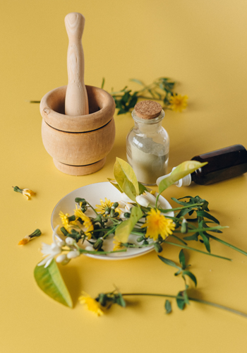

Preparation Method
Begin by watching this video with Annie Meredith from HeartRadiance Australia Essences on how to make essences and the things to consider when making essences.
As mentioned in the video, the process of making a flower essence is distilling the flower water into the mother tincture, then to the stock bottle, then to the dosage bottle.
Bach developed two methods of preparing the mother tincture remedies from the flowers.
The sun Method and the boiling Method.
Most of the more delicate flowers are prepared using the sun method. This involves floating the flower heads in pure water for three hours, in direct sunlight. Woodier plants, and those that bloom when the sun is weak, are generally prepared by the boiling method, for example, by boiling the flowering parts of the plant for half an hour in pure water.Sun Preparation Method
To make the mother tincture, you will need:
- a plain glass bowl
- an amount of spring water: 3 x 25 / 15 mL
- amber round bottles with dropper tops
- a sieve
- a pair of strong tweezers
All these implements must be vibrationally cleansed before use. To do this, they need to be soaked in a salt-soaked solution for at least ten minutes, then rinsed off in clear water. The Mother Tincture is sourced from nature, which is then filtered down to the dosage bottle for administration to the person.
(White, 1999)Boiling Preparation Method
Bach used the boiling preparation method to prepare the mother tincture from 18 essences from trees, bushes and plants, most of which flower in the early part of the year. These are picked, boiled in a saucepan and left in the pan to cool outdoors.
(Nelson, 2014)- Collect flowers in the early morning with some twigs and stems from selected plants
- Fill pot ¾ with flowers and cover pot
- Cover the flowers and twigs with 1L of spring/distilled water
- Boil for 30 minutes
- Allow to cool, then remove plant matter and filter water from the pot
- Transfer to 500ml bottles that are ½ filled with brandy
- Label the Mother Tincture bottle appropriately
Making a Stock Bottle
To make the practitioner strength Stock Bottle that you are able to buy from essence makers, you would take drops
from your Mother Tincture and add this to a flower essence menstruum of water and a preservative (commonly brandy).
The number of drops taken from the Mother Tincture is entirely up to you. Examples are given below for guidance.
There are two main methods of preparation. One for Australian bush essences and one for the Bach flower essences.
Let's look at the differences.
When purchasing practitioner stock of either essence, this is the strength you will receive.
Bach Flower Remedies (BFR):
- Base — 30 ml straight brandy
- Add two drops of mother tincture
Australian Bush Flower Essences (ABFE) and HeartRadiance Australia Flower Essences:
- Base — 1/3 purified spring water to 2/3 brandy
- Add seven drops of mother tincture
Making a Dosage Bottle
From the stock bottle, you then make the dosage bottle.
ABFE:
- Base: 3/4 purified spring water and 1/4 brandy
- Add seven drops of the stock tincture
BFR:
- Base: 2/3 purified spring water and 1/3 brandy
- Add two drops from the stock tincture
Making the Remedy
For Bach remedies, Bach suggested Dosage Bottle (30ml dropper bottle).
Contents include:
- Two drops of the/each Stock Bottle remedy (you have either made up or bought as a practitioner)
- Flower essence menstruum containing:
- 2/3 water (spring/mineral)
- 1/3 preservative (e.g. brandy)
The patient takes four drops a minimum of four times/day.
The amount of flower essence drops used will differ from set to set. Please take note of the recommended amounts unless you are using an intuitive method of arriving at a dosage amount.
Essence Kit Maker Suggestions
Essence makers will give suggested instructions for taking the remedies. Bach, for example, is four drops of the dosage bottle placed under the tongue four to five times daily. This would be written out on a script/label clearly "four drops placed under your tongue four times daily".
Dosing
There are options for dosing that also need to be considered. For example, would you like to dose the remedy as per the essence maker instructions or in another way? Consider the client - could the remedy dosage work in with the script you are creating? For example:
- What additional lifestyle considerations are you co-prescribing?
- Are you prescribing liquid herbs that you could add them to? Are you prescribing increased watch intake that you could add them to?
- Are you prescribing a tea ritual they could be added to?
- Would you like them to take the remedy internally or externally? For example, are you making up a healing balm or aura spray that you might add them to?
Consider the essence maker suggestions here because if you chose to deviate from this you will need to clinically justify your reasons. Flower essences are vibrational remedies so may be taken internally (drops under the tongue, sipped slowly from a glass of water or in a water bottle) or externally (applied to the lips, wrists, temples when they cannot be given by the mouth; adding them to bathwater; lotions and salves; body splash; Aura and room sprays).
It is important to get into the habit of taking a remedy regularly to reap its full benefits. Taking the essence on rising and on retiring is best, as your mind is usually relaxed and receptive to the essences. It may be a good idea to keep your chosen remedy beside your bed so you remember to take it as you wake up and before you go to sleep. Consider if informing and involving the client throughout the administering and prescribing process will help them become aware of their own stress patterns and enable them to take back responsibility for their health and happiness. Be constantly mindful of the client’s beliefs and philosophies.